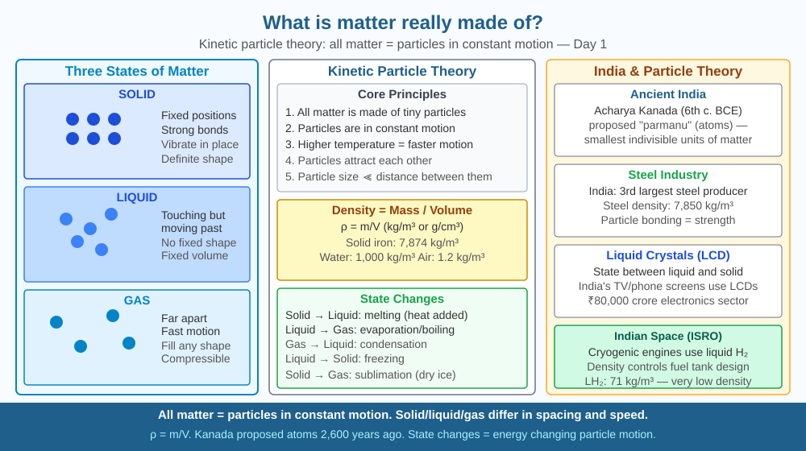

By the end of this lesson, you should be able to describe what matter is made of at the particle level, explain kinetic theory, and predict what happens when particles are confined more tightly.
Everything you can touch — this page, a glass of water, the air you breathe — is made of something. But what? Ancient Greek philosophers argued for centuries. In the 19th century, John Dalton proposed the answer still used today: all matter is made of tiny particles called atoms.
Kinetic Molecular Theory: All matter consists of tiny particles (atoms or molecules) that: 1. Are in constant, random motion 2. Have space between them (even in solids) 3. Exert forces on each other
Three states of matter: - Solid: Particles tightly packed, vibrate in fixed positions. Definite shape and volume. - Liquid: Particles close but able to slide past each other. Definite volume, no fixed shape. - Gas: Particles far apart, move freely. No fixed shape or volume.
Density: Mass per unit volume — more particles per unit space = denser substance. Iron (7,874 kg/m³) vs water (1,000 kg/m³) vs air (1.2 kg/m³).
Intermolecular forces hold particles together. In solids they're strong; in gases, negligible at normal conditions.
Think of particles in matter like people in a stadium:
Now the key insight: in all three cases, people are still moving. Freeze the temperature (midnight, everyone asleep) and motion slows — but it never fully stops at normal temperatures. Compress the crowd into a smaller arena (increase pressure on a gas) and collisions become far more frequent — density rises and pressure increases. This is why the three-state model predicts gas behaviour, syringe compressibility, and why squeezing a liquid barely changes its volume.
The SVG diagram shows three side-by-side panels, each labelled with the state of matter. In the solid panel, circles (particles) are arranged in a tight regular grid with short double-headed arrows showing vibration — no particle leaves its position. In the liquid panel, the same circles are clustered together but arranged irregularly, with curved arrows showing particles sliding past each other in random directions. In the gas panel, circles are spread far apart across the full panel area with long straight arrows showing high-speed random movement in all directions. A scale bar beneath all three panels marks particle spacing, showing the dramatic difference from solid to gas. A fourth inset box in the corner shows two syringes side by side — one filled with air (plunger pushed halfway, indicating compressibility) and one filled with water (plunger immovable), with the caption "Air compresses; water does not — particle spacing explains why."

India's cement industry (world's 2nd largest, 390 MT/year) relies on understanding particle packing — how fine particles of limestone, clay, and gypsum fit together determines concrete strength. Steel production (TATA, JSW) uses precise knowledge of atom arrangements in iron lattices. Pharmaceutical companies (Sun Pharma, Dr Reddy's) engineer drug molecules at the atomic scale to target specific disease pathways. India's LPG cooking gas distribution network — serving 310 million households — works because gas particles under pressure occupy far less space than at atmospheric pressure, allowing vast quantities of gas to be stored as liquid in cylinders.
Take a syringe without the needle. Draw 20 mL of air. Block the nozzle with your thumb. Try to push the plunger in. You can compress it — proving gas particles have space between them. Try with water instead — barely compressible, proving liquid particles are much closer together. The difference is particle spacing.
Now try this: pull the plunger out on the air-filled syringe while blocking the nozzle. The air inside expands — particles spread further apart to fill more volume. Let go, and the plunger springs back. The same number of particles occupying different volumes demonstrates that particle spacing, not particle count, determines the state behaviour.
The Standard Model of particle physics goes further than atoms. Protons and neutrons are made of quarks. The Large Hadron Collider at CERN discovered the Higgs boson (2012), the particle that gives other particles their mass. India contributes through the Variable Energy Cyclotron Centre in Kolkata and TIFR in Mumbai. The smallest known particles are quarks and leptons — about 10⁻¹⁸ m across, a billion times smaller than an atom.
At this scale, the neat picture of solid spherical particles breaks down entirely. Quarks are held together by the strong nuclear force, which gets stronger as you try to pull quarks apart — the opposite of everyday forces. This property, called confinement, means a free quark has never been detected. Matter at its deepest level is stranger than the particle model suggests — which is precisely why the particle model is useful at the everyday chemistry scale, even though it is a simplification.
Predict: If you were to keep dividing a sample of pure iron — physically cutting it in half repeatedly — at what point does the material stop behaving like iron? What property does that last undividable unit retain that all the larger pieces also had?
Which best describes what matter is made of at its most fundamental level?
Correct answer: C
Why is identifying the mechanism more useful than just memorising the result?
Correct answer: A
If the number of particles in a fixed space were doubled, what would you predict?
Correct answer: B
A steel cylinder holds compressed natural gas (mostly methane, CH₄) at 200 times atmospheric pressure. A technician needs to estimate how many cubic metres of gas will be released when the cylinder (volume 50 litres) is fully emptied at normal atmospheric pressure.
Step through this using particle reasoning: if pressure drops from 200 atm to 1 atm while temperature stays constant, what happens to the volume the same number of particles occupies? Calculate the approximate volume of gas released. Then explain why this calculation assumes ideal gas behaviour, and name one condition under which real gas behaviour would deviate — using what you know about intermolecular forces between particles.
The chair you are sitting on is almost entirely empty space. If you removed all the empty space from every atom in a human body, the remaining matter would fit into a cube roughly 0.002 mm on each side — smaller than a grain of fine powder. What feels solid is not packed matter: it is electromagnetic force between electron clouds preventing atoms from passing through each other. The sensation of touching something is actually the repulsion between your skin's electrons and the object's electrons — no two pieces of matter ever actually make contact at the atomic level.
All matter — solid, liquid, and gas — consists of constantly moving particles with space between them, and the amount of space and the freedom of movement determine every physical property from density to compressibility.